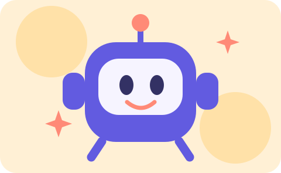
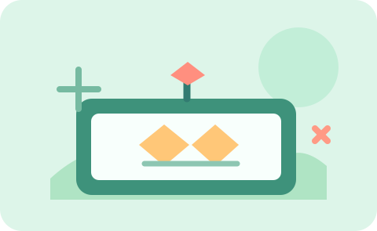
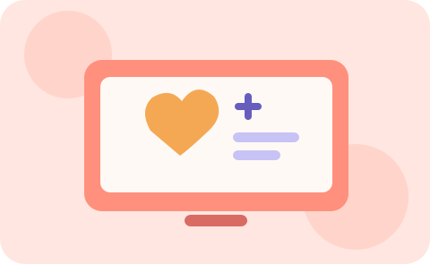

AI + discovery
AI Explorer Workshops
Discover what artificial intelligence is through age-appropriate discussions, games, and creative problem-solving.
Designed for ages 6–12
There is more than one way to discover something incredible. Explore our proposed hands-on experiences in coding, artificial intelligence, summer camps, and after-school learning.
Pick the format that interests you. Activities and availability are illustrative for this classroom website.

Discover what artificial intelligence is through age-appropriate discussions, games, and creative problem-solving.
Explore programming basics and turn simple ideas into interactive projects, patterns, and playful digital creations.

Bring technology and teamwork together through a camp-style format that puts experimentation and collaboration first.

An encouraging place to continue learning, connect with peers, and practice new tech skills beyond the classroom.
Note: No confirmed schedules, prices, enrollment openings, or specific curricula are represented here.
Our learning approach centers on exploration, collaboration, and confidence. Technology is easier to understand when kids are encouraged to ask questions, try things out, and learn by doing.
Ask about a programChoose a program that sparks interest and preview what an inquiry could look like.